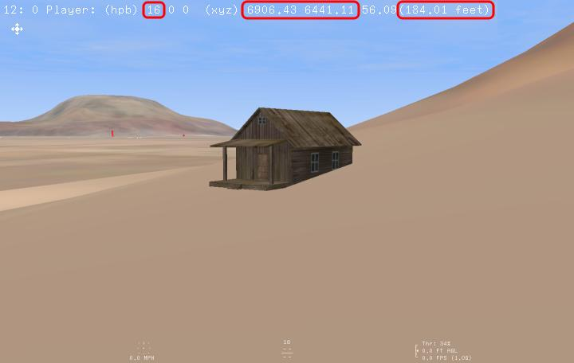
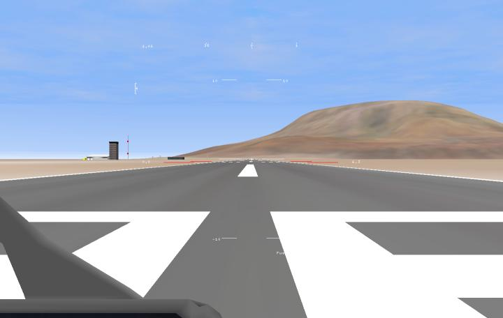
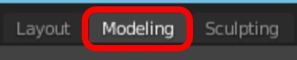
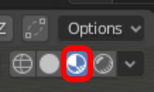
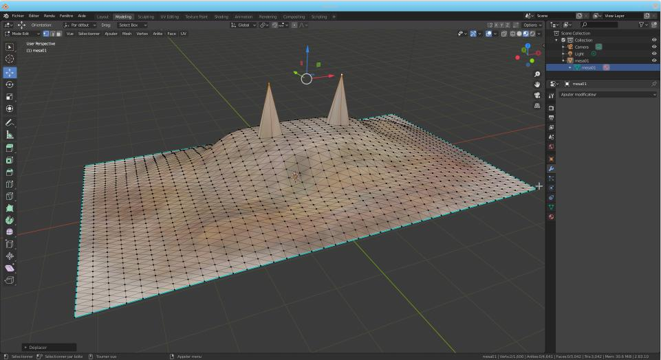

Search And Rescue II documentation: how to write a scenery.
[TODO], just a few information for now, mainly for terrain, and two usefull tips to place objects on a scenery and to edit a terrain height field:
-
Scenery (*.scn file) loads objects (data/objects/*.3d files). Objects can be terrain, building, trees, ...
-
Terrain is an object loaded by scenery file using a "create_object 6" parameter followed by a "model_file objects/.../*.3d" parameter. Terrain objects refers to elevation and texture files.
-
Terrain elevation map (*.hf file, you can name it as *.hf.tga) is an 8 bits gray, top left origin, without Run Length Encoding *.tga file. See heightfield_load.
Its dimensions (image width and height) must be a power of 2.
-
Terrain texture (*.tex file, you can name it as *.tex.tga) is a 4*8 bits rgba, top left origin, without Run Length Encoding *.tga file. See texture_load. Its dimensions (image width and height) must be a power of 2.
-
A full black (0x000000) pixel on an object texture will be fully transparent, thus use 0x010101 if you want a black color.
-
If you want to place objects on a scenery, you can easily determine object coordinates and rotation whith this tip:
-
First, create the following "object_placer.3d" file with a text editor then save it in the "sar2_base_directory/data/aircrafts/" directory. This will create a very minimal "aircraft" wich will only be able to move in slew mode.
begin_header
#------------- You can put object texture(s) path(s) here -------------#
end_header
name Object placer
type 4
range 20000
dry_mass 1000.0
fuel 0.0001 1000.0 1000.0
engine n 0 100 1.0
begin_model standard
#---------------------- Put object vertices here ----------------------#
end_model standard
begin_model cockpit
# Don't put anything here
end_model cockpit
-
Once done, complete this file with your object verticies and (it's not mandatory but prettier) texture path, and save it.
-
Start sar2, select Free Flight, then your scenery, then select the "Object placer" aircraft, then Begin. After loading, DON'T PANIC and press [F3] key... Phew! Better, isn't it? Now, press [E] to start engine.
-
Once engine started (wait to see "Thr: x%" instead of "Eng(O): 0%"), press [CTRL]+[A] to activate slew mode. You can now move your object horizontally as you want with joystick or the cursor keys. Use joystick twist rudder or press [CTRL] + [Left]/[Right] cursor keys for steering (heading), and press [HOME]/[END] keys for up/down (25 feet steps).
Note: your object will always be on or above the ground. If it is above the ground, press [END] key until it touches ground (it will never move below ground).
-
Place your object where you want. You will see it's position (relative to scenery origin point) at the top left corner of the screen. Interesting values are heading, x and y coordinates, and z in feet, because you will can use them to set object position in scenery or mission files with the rotate and translate statements.

-
There is a very cool tool to generate height fields: https://tangrams.github.io/heightmapper/. It can export *.png 8 bits gray images, which can easily be converted to *.tga format with ImageMagick as this: "convert tangrams_export.png -type Grayscale -depth 8 tga:image-origin=TopLeft myHeightField.tga".
-
It is possible to edit a height field ("elevation map") with v3dconverter and Blender. Below is an example with mesa01.3d terrain from Desert scenery.

-
Create a working directory:
cd sar2/tools/v3dconverter/
mkdir workdir
-
Copy mesa01.tex texture file to your workdir. If not, it will work, but you will not be able to activate terrain texture display in Blender because it will not find it:
cp sar2_base_directory/data/textures/desert/mesa01.tex workdir
-
Convert mesa01.3d file to mesa01.obj and apply a 1/1000 scale (one meter in Sar2 will be one millimeter in Blender):
./v3dconverter -i sar2_base_directory/data/objects/desert/mesa01.3d -sc 1/1000 -o workdir/mesa01.obj
-
Start Blender, import Wavefront mesa01.obj file. Once done, go to Modeling tab , activate Material preview mode , then activate "mesa01" meshes : you should see a lot of triangles which represents terrain profile. Now, move some vertices along Z axis (no X/Y nor 'below 0' Z modifications allowed!!!). Export your work to Wavefront format as workdir/mesa01_new.obj.

Note: I suppose that an other software than Blender can work too if it don't modify material name.
-
Convert your mesa01_new.obj file to mesa01_new.hf height field file as this:
Note: scale previously applied will be automatically reverted during conversion process.
./v3dconverter -i workdir/mesa01_new.obj -o workdir/mesa01_new.hf
-
Look at the command line. If, as in this example, a point in mesa01_new.obj has a max altitude bigger than the original one defined in the mesa01.3d file, v3dconverter will advise you to modify altitude value in *.3d terrain file:
You should modify the heightfield_load 4th argument (altitude) value to 2594.018 in the *.3d terrain file.
Do do this, first do a backup of mesa01.3d:
cp sar2_base_directory/data/objects/desert/mesa01.3d sar2_base_directory/data/objects/desert/mesa01.3d.bak
Then open sar2_base_directory/data/objects/desert/mesa01.3d file with a text editor and modify the following line:
heightfield_load textures/desert/mesa01.hf 11000 6000 1400 0 0 0 0 0 0
As this (of course, if you did your own test, v3converter has certainly proposed you another value):
heightfield_load textures/desert/mesa01.hf 11000 6000 2594 0 0 0 0 0 0
-
Now, rename the original mesa01.hf file as a backup, then rename and copy the new file at the right place:
mv sar2_base_directory/data/textures/desert/mesa01.hf sar2_base_directory/data/textures/desert/mesa01.hf.bak
cp workdir/mesa01_new.hf sar2_base_directory/data/textures/desert/mesa01.hf
-
Start sar2, go to Free Flight, select Desert scenery and Runway 36 location, click on Aircraft then on Begin, and look at your modifications.